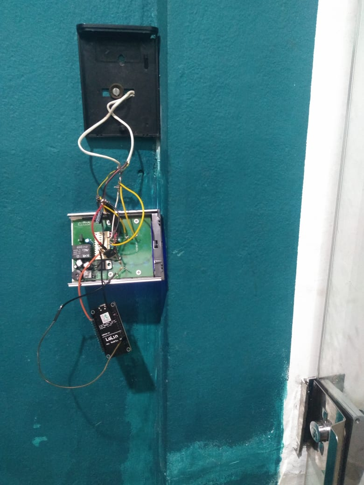
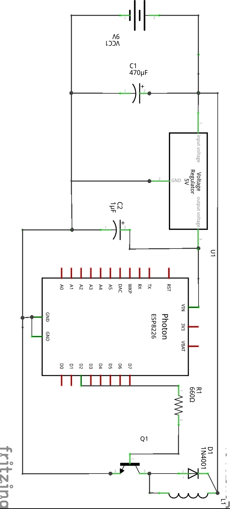

Fechadura Elétrica com acionamento pelo smartphone
A fim de facilitar a vida de moradores de um prédio, instalei um módulo WiFi
ESP8266 para acionar a fechadura elétrica de uma porta de vidro do térreo. Essa mesma fechadura
inicialmente, era acionada apenas com o controle digital de acesso AGL com senha (O cabeamento da interfonia instalado
era destinado a um outro portão). Como não tinha
como abrir essa porta do apartamento, era necessário que o morador decesse para o térreo e destrancar
a porta manualmente se recebesse uma visita, e pelo visto, ficava pior a medida que o andar aumentava.
Após estudar o circuito do controle de acesso e fazer o devido planejamento, calculei o valor do resistor
e o transistor necessário (BC639) para o acionamento da fechadura, além de verificar se o microcontrolador iria
caber dentro da caixinha do controle de acesso. Em seguida, comecei a instalação:


Após ter montado a parte física do projeto, chegou a parte do código, no qual optei pro usar por usar o servidor e aplicativo Blynk ao invés de programar um servidor HTTP dedicado por fins de praticidade já que usar o mesmo demandaria um endereço de ip estático (ISPs geralmente cobram por isso) e configurar o firewall do roteador para aceitar conexões (ISPs geralmente proibem isso já que o roteador WiFi da pessoa que me ofereceu acesso pertence à Vero):
#include <Arduino.h>
#include <ESP8266WiFi.h>
#include <BlynkSimpleEsp8266.h>
char auth[] = ""; // Auth token
// WiFi credentials
char ssid[] = "";
char pass[] = "";
void multPulse(int pin, int pulses) {
for(int i=0;i<pulses;i++) {
digitalWrite(pin, HIGH);
delay(100);
digitalWrite(pin, LOW);
delay(200);
}
}
void setup() {
// Debug console
Serial.begin(9600);
Blynk.begin(auth, ssid, pass);
}
void loop() {
Blynk.run();
if(digitalRead(4) == 1)
multPulse(4, 6);
}
Antes de completar o código, quebrei um pouco a cabeça até descobrir que para acionar a fechadura e abrir a porta era necessário no mínimo 6 pulsos e não 1. Isso explica a função multPulse(). Após finalizar o projeto, bastava a apenas os moradores baixarem o Blynk para seu smartphone, scanearem um QR code e apertar um simples botão para abrir a porta para visitas sem sair de seus apartementos :)